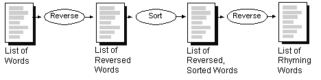
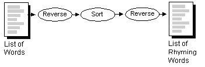
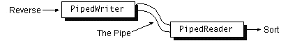

Feedback Form
|
|
Start of Tutorial > Start of Trail > Start of Lesson |
Search
Feedback Form |
PipedReaderand
PipedWriterPipedInputStreamPipedOutputStreamConsider a class that implements various string manipulation utilities such as sorting and reversing text. It would be nice if the output of one of these methods could be used as the input for another so that you could string a series of method calls together to perform some higher-order function. For example, you could reverse each word in a list, sort the words, and then reverse each word again to create a list of rhyming words.
Without pipe streams, the program would have to store the results somewhere (such as in a file or in memory) between each step, as shown here:
 With pipe streams, the output from one method could be piped into the next, as shown in this figure:
This figure has been reduced to fit on the page.
Click the image to view it at its natural size. Next, we investigate a program that implements what's represented by the diagram in the previous figure. This program usesPipedReaderandPipedWriterto connect the input and output of itsreverseandsortmethods in order to create a list of rhyming words. Several classes make up this program. This section shows and discusses only the elements of the program that read from and write to the pipes. Follow the code links presented here to see the whole program.First, let's look at the calling sequence of the
reverseandsortmethods from themainmethod in theRhymingWordsclass:
The innermost call toFileReader words = new FileReader("words.txt"); Reader rhymingWords = reverse(sort(reverse(words)));reversetakes aFileReaderopened on the filewords.txtthat contains a list of words. The return value ofreverseis passed tosort, whose return value is then passed to another call toreverse.Let's look at the
reversemethod; thesortmethod is similar and you will understand it once you understandreverse.The bold statements inpublic static Reader reverse(Reader source) { BufferedReader in = new BufferedReader(source); PipedWriter pipeOut = new PipedWriter(); PipedReader pipeIn = new PipedReader(pipeOut); PrintWriter out = new PrintWriter(pipeOut); new ReverseThread(out, in).start(); return pipeIn; }reversecreate both ends of a pipe--aPipedWriterand aPipedReader-- and connects them by constructing thePipedReader"on" thePipedWriter. Whatever's written to thePipedWritercan be read from thePipedReader. The connection forms a pipe, as illustrated here: reversestarts aReverseThreadPipedWriterand then returns thePipedReaderto the caller. The caller then arranges for a sorting thread to read from it. Thesortmethod is exactly the same, except that it creates and starts aSortThread
Thereversemethod contains some other interesting code; in particular, these two statements:The first line opens aBufferedReader in = new BufferedReader(source); ... PrintWriter out = new PrintWriter(pipeOut);BufferedReaderonsource, the argument to reverse (aReader). This essentially "wraps"sourcein aBufferedReader. The program reads from theBufferedReader, which in turn reads fromsource. The program does this so that it can useBufferedReader's convenientreadLinemethod. Similarly, thePipedWriteris wrapped in aPrintWriterso that the program can usePrintWriter's convenientprintlnmethod. You will often see streams wrapped in this way so as to combine the various features of the many streams.
Try this: Write another version of this program that uses input streams and output streams in place of readers and writers. See for the solution.

|
|
Start of Tutorial > Start of Trail > Start of Lesson |
Search
Feedback Form |